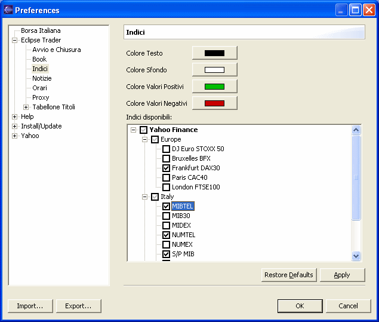

La finestra degli Indici viene mostrata selezionando Mostra Indici dal menu Window.
La finestra mostra affiancati i dati relativi agli indici selezionati.
Per ogni indice viene mostrato il nome (o la descrizione), l'orario dell'ultima
lettura, l'ultimo valore letto e la variazione, numerica e in percentuale, rispetto
all chiusura del giorno precedente. Un'icona posta a fianco della variazione indica
la variazione del prezzo rispetto alla lettura precedente.
Per accedere alle impostazioni della finestra indici selezionare Preferences dal menù Window, quindi Indici dal gruppo Eclipse Trader.

La parte alta della pagina consente di personalizzare i colori utilizzati dai riquadri degli indici.
La parte inferiore mostra l'elenco ad albero degli indici messi a disposizione dai vari fornitori di dati. Selezionando un indice, tramite la casella di controllo, esso verrà visualizzato nella finestra Indici e aggiornato secondo i ritmi impostati per il fornitore dei dati.